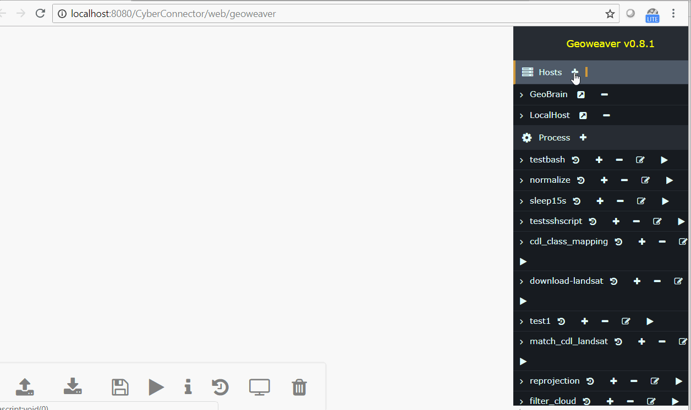
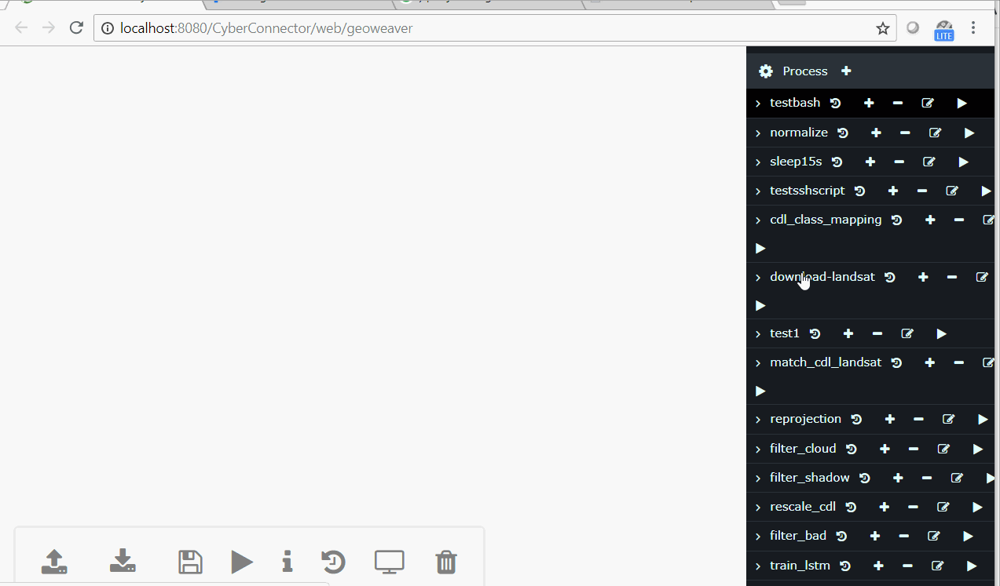
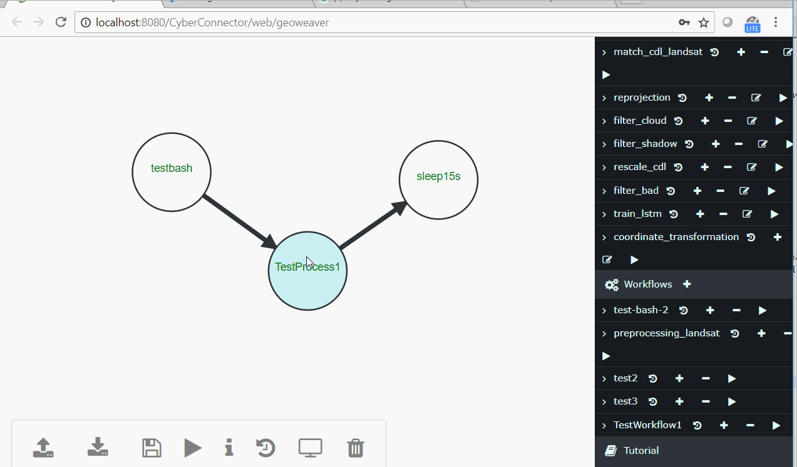
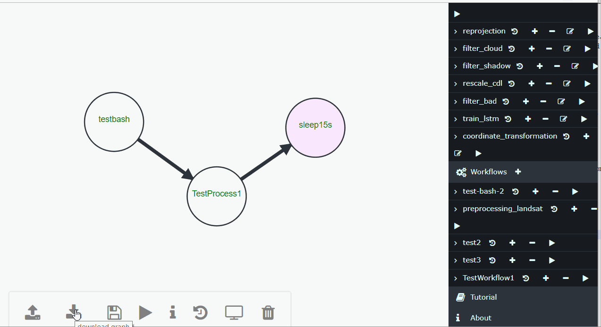

Geoweaver
2018 ESIP Lab Incubator Project
Geoweaver is a web system allowing users to easily compose and execute full-stack deep learning workflows via taking advantage of online spatial data facilities, high-performance computation platforms, and open-source deep learning libraries. It is a perfect alternative to SSH client (e.g., Putty), FTP client, and scientific workflow software.
Table of Contents
- 1. Project Goals
- 2. Installation
- 2.1 Dependencies
- 2.2 Quick Install
- 2.3 Developer Install
- 2.4 Build from source
- 3. Demo
- 4. Usage
- 4.1 Add A Server
- 4.2 Create A Process
- 4.3 Create A Workflow
- 4.4 Run Workflow
- 4.5 Browse Provenance
- 4.6 Retrieve and Display Results
- 4.7 I/O workflows
- 5. Documentation
- 6. Dependencies
- 7. License
- 8. Author
1. Project Goals
1) turning large-scale distributed deep network into manageable modernized workflows;
2) boosting higher utilization ratio of the existing cyberinfrastructures by separating scientists from tedious technical details;
3) enhancing the frequency and accuracy of classified land cover land use maps for agricultural purposes;
4) enabling the tracking of provenance by recording the execution logs in structured tables to evaluate the quality of the result maps;
5) proof the effectiveness of operationally using large-scale distributed deep learning models in classifying Landsat image time series.
2. Installation
2.1 Dependencies
If you choose "Quick Install", no need to install these dependencies separately. The install scripts will retrieve these dependencies automatically.
Java 1.8+ (OpenJDK 8 or higher)
Tomcat 8.0+
Apache Maven 3.5+ (optional for building from source)
Docker 18.09.1+ (for install via docker)
Docker-compose 1.23.1+ (for install via docker)
2.2 Quick Install
Linux
This way works for most linux releases, e.g., Ubuntu, CentOS, RedHat, OpenBSD, etc.
- Step 1: clone the github repo
git clone https://github.com/ESIPFed/Geoweaver.git
- Step 2: enter the folder and start the install
cd Geoweaver
chmod 755 install-linux.sh
./install-linux.sh
-
Once the script stops, the Geoweaver should already be up and running. Enter URL http://127.0.0.1:8080/Geoweaver/web/geoweaver in browser to open it.
-
Optional: To stop Geoweaver, type:
install/apache-tomcat-9.0.22/bin/shutdown.sh. To start Geoweaver again, type:install/apache-tomcat-9.0.22/bin/startup.sh
Mac
- Step 1: clone the github repo
git clone https://github.com/ESIPFed/Geoweaver.git
- Step 2: enter the folder and start the install
cd Geoweaver
chmod 755 install-mac.sh
./install-mac.sh
-
Once the script stops, the Geoweaver should already be up and running. Enter URL http://127.0.0.1:8080/Geoweaver/web/geoweaver in browser to open it.
-
Optional: To stop Geoweaver, type:
install/apache-tomcat-9.0.22/bin/shutdown.sh. To start Geoweaver again, type:install/apache-tomcat-9.0.22/bin/startup.sh
Windows
- Step 1: clone the github repo
git clone https://github.com/ESIPFed/Geoweaver.git
- Step 2: enter the folder and start the install
cd Geoweaver
./install-windows.bat
-
Once the script stops, the Geoweaver should already be up and running. Enter URL http://127.0.0.1:8080/Geoweaver/web/geoweaver in browser to open it.
-
Optional: To stop Geoweaver, type:
install/apache-tomcat-9.0.22/bin/shutdown.bat. To start Geoweaver again, type:install/apache-tomcat-9.0.22/bin/startup.bat
2.3 Developer Install
This section is dedicated for high-level users who have better background on web technologies and familiar with MySQL, Tomcat and Docker. If you are not familiar with either of them, we strongly suggest you use the "Quick Install" way to install Geoweaver.
Docker
We use docker-compose to establish the containers for Geoweaver. As the DockerHub is not very friendly for docker-compose yaml at present, we only suggest manual to start from GitHub repo. It only has three steps.
Install
- Clone this repo to your machine
git clone https://github.com/ESIPFed/Geoweaver.git
- Enter the repo and create a new folder
target. Download a Geoweaver war package from the release page and save it in the createdtargetfolder.
cd Geoweaver && mkdir target && cd target
wget https://github.com/ESIPFed/Geoweaver/releases/download/v0.7.0/Geoweaver-0.7.0.war -O Geoweaver.war
- Run docker to start rolling. After the command is finished, Geoweaver should be up and running.
cd .. && docker-compose up -d
The address is:
http://your-ip:your-port/Geoweaver/web/geoweaver
Replace the your-ip, your-port with the real domain of your tomcat. For example, localhost:8080.
Notice: Make sure the local services like mysql and tomcat are shut down before starting docker-compose. Otherwise there might be port conflict error on 3306 and 8080. Or you can change the port to some other free ports in the docker-compose.yml.
If you don't have docker or docker-compose installed, these documents will help. docker docker-compose
Shutdown
To stop Geoweaver, type:
docker stop $(docker ps -aq)
Tomcat War
Install
- Download the latest release war and copy it to the webapps directory of Tomcat (e.g. /usr/local/tomcat). Start Tomcat.
wget https://github.com/ESIPFed/Geoweaver/releases/download/v0.6.10/Geoweaver-0.6.10.war -O Geoweaver.war
cp Geoweaver.war /usr/local/tomcat/webapps/
/usr/local/tomcat/bin/startup.sh
- After the tomcat is fully started, configure the database connection. The configuration files are
WEB-INF/classes/config.properties
nano /usr/local/tomcat/webapps/Geoweaver/WEB-INF/classes/config.properties
nano /usr/local/tomcat/webapps/Geoweaver/WEB-INF/classes/cc_secret.properties
Fill the fields with correct values. (database url, default: jdbc:mysql://localhost:3306/cyberconnector) and WEB-INF/classes/cc_secret.properties (database username and password: database_user=root database_password=xxxxxxxx).
(Note: the database must be initiated by the SQL file under the folder Geoweaver/docker/db first.)
mysql -u root -p < docker/db/gw.sql
- Enter the following URL into browser address bar to open Geoweaver:
http://your-ip:your-port/Geoweaver/web/geoweaver
Shutdown
To stop Geoweaver, use:
/usr/local/tomcat/bin/shutdown.sh
Cloud VM Template
Install
We provide a ready-to-use cloud template for you to install on mainstream cloud platforms like AWS, Google Cloud, Azure, OpenStack and CloudStack. Please go here to download the template (3.1 Gigabytes). The username and password of the instance would be csiss and password respectively.
To start Geoweaver, go to directory /home/csiss/Geoweaver and execute docker-compose up -d. With no accident, Geoweaver will be up and running.
cd /home/csiss/Geoweaver && docker-compose up -d
Shutdown
To stop Geoweaver, use:
docker stop $(docker ps -aq)
2.4 Build from source
Use maven to build. In the command line go to the root folder and execute mvn install. After a success build, the Geoweaver war package will be under the directory: Geoweaver/target/Geoweaver-<version>.war.
3. Demo
A live demo site is available in George Mason University: I am a link, hit me.
Here is a use case of Geoweaver, using deep neural network like LSTM RNN and SegNet to classify landsat images into agricultural land use maps. In this case, Geoweaver can help stakeholders get crop maps with better accuracy and high temporal resolution by providing a deep-learning-powered and distributed workflow system.


Animation demo:

4. Usage
4.1 Add A Server
Enroll a server to Geoweaver is simple. The server must have SSH server installed and enabled. The server must be accessible from Geoweaver host server.

4.2 Create A Process
Geoweaver supports Bash Shell scripts as processes. You can write bash command lines in the code area. Note: the commands should exist on the target hosts.

4.3 Create A Workflow
Geoweaver can link the processes together to form a workflow. To connect two processes, press shift key while dragging from one process to another.

4.4 Run Workflow
Geoweaver can run the created workflows on the enlisted servers. During the running, Geoweaver is monitoring the status of each process. The color of process text in their circles indicate the process status. Yellow means running, green means completed, and red means failure.

4.5 Browse Provenance
Geoweaver stores all the inputs and outputs of each process run. Users can check the workflow provenance by simply clicking.

4.6 Retrieve and Display Results
Geoweaver can retrieve the result files of the executed workflows and visualize them if the format is supported (png, jpg, bmp, etc. The list is expanding. I am on it.).

4.7 I/O workflows
The workflows can be exported and move around and imported back.

5. Documentation
6. Dependencies
This project is impossible without the support of several fantastic open source libraries.
d3.js - BSD 3-Clause
graph-creator - MIT License
bootstrap - MIT License
CodeMirror - MIT License
JQuery Terminal - MIT License
7. License
MIT